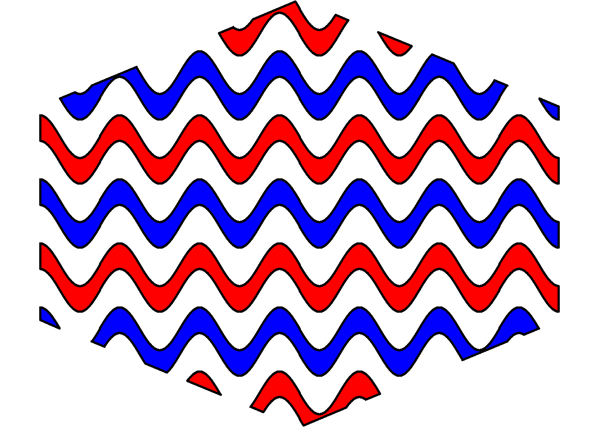
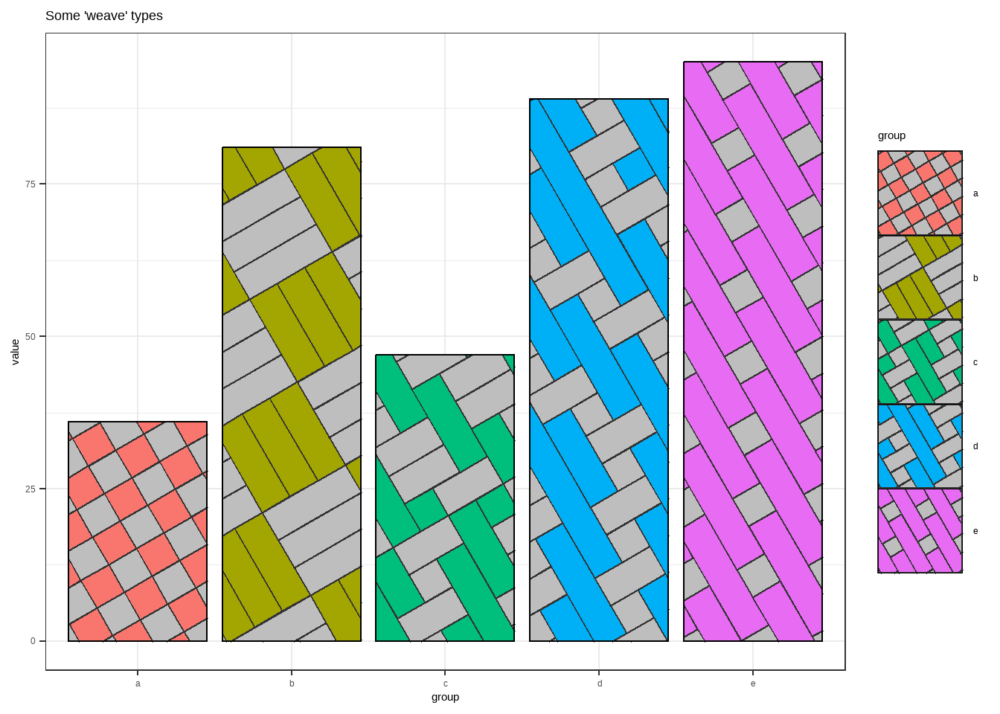
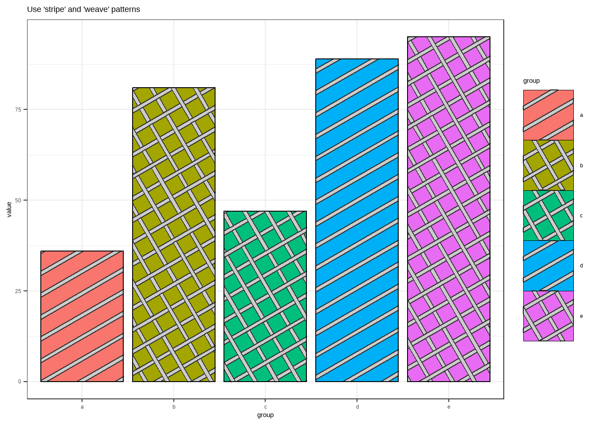

Show the code
library(ggplot2)
library(patchwork)
library(ggpattern)
library(gridpattern)ggpattern 填充几何纹理或图像
library(ggplot2)
library(patchwork)
library(ggpattern)
library(gridpattern)set.seed(123)
df <- tibble(
group = letters[1:5],
value = round(runif(5,min = 10,max = 100),digits = 0)
)
df %>%
ggplot(mapping = aes(x = group, y = value, fill = group)) +
geom_col()
names_magick_stripe [1] "crosshatch" "crosshatch30" "crosshatch45" "horizontal"
[5] "horizontal2" "horizontal3" "hs_bdiagonal" "hs_cross"
[9] "hs_diagcross" "hs_fdiagonal" "hs_horizontal" "hs_vertical"
[13] "left30" "left45" "right30" "right45"
[17] "vertical" "vertical2" "vertical3" names_hex[1] "hex" "hex1" "hex2" "hex3" "hex_skew"names_pattern [1] "ambient" "circle" "crosshatch" "fill"
[5] "gradient" "image" "magick" "none"
[9] "pch" "placeholder" "plasma" "polygon_tiling"
[13] "regular_polygon" "rose" "stripe" "text"
[17] "wave" "weave" 'stripe' (default), 'crosshatch', 'pch', 'circle', 'none'
p1 <- ggplot(df, aes(group, value )) +
geom_col_pattern(pattern = "stripe",
fill= "white", # 条形背景色
color="red", # 条形边框色
pattern_fill = "skyblue", # 几何纹理填充色
pattern_colour="darkgreen",
pattern_angle =30, # 旋转角度
pattern_linetype= 3 ,# 笔划stroke 线型
pattern_size= 1.2, #笔画线宽
) +
ggtitle("线条：stripe")
p2 <- ggplot(df, aes(group, value )) +
geom_col_pattern(pattern = "crosshatch",
fill= "white", # 条形背景色
color="red", # 条形边框色
pattern_fill = "red", # 几何纹理填充色
pattern_colour="green",
pattern_angle =30 , # 角度
pattern_spacing= 0.2
) +
ggtitle("交叉平行线：crosshatch")
p3 <- ggplot(df, aes(group, value )) +
geom_col_pattern(pattern = "pch",
fill= "white", # 条形背景色
color="red", # 条形边框色
pattern_colour="green",
pattern_angle =30,
pattern_density = 1,
) +
ggtitle("点：pch")
p4 <- ggplot(df, aes(group, value )) +
geom_col_pattern(pattern = "circle",
fill= "white", # 条形背景色
color="red", # 条形边框色
pattern_colour="darkgreen",
pattern_fill = "skyblue",
pattern_angle =30, # 角度
pattern_density = 1,
pattern_spacing= 0.2, # 间距
) +
ggtitle("圈：circle")
(p1+p2)/(p3+p4)
x_hex <- 0.5 + 0.5 * cos(seq(2 * pi / 4, by = 2 * pi / 6, length.out = 6))
y_hex <- 0.5 + 0.5 * sin(seq(2 * pi / 4, by = 2 * pi / 6, length.out = 6))
grid::grid.newpage()
wave_sine <- grid.pattern_wave(x_hex, y_hex, colour = "black", type = "sine",
fill = c("red", "blue"), density = 0.4,
spacing = 0.15, angle = 0,
amplitude = 0.05, frequency = 1 / 0.20)
# zig-zag pattern is a wave of "type = triangle"
grid::grid.newpage()
wave_triangle <- grid.pattern_wave(x_hex, y_hex, colour = "black",
type = "triangle",
fill = c("red", "blue"), density = 0.4,
spacing = 0.15, angle = 0, amplitude = 0.075)
pattern_type= ,
pattern_subtype=
names_weave [1] "basket" "matt" "matt_irregular"
[4] "plain" "rib_warp" "satin"
[7] "twill" "twill_elongated" "twill_herringbone"
[10] "twill_zigzag" ggplot(df, aes(group, value)) +
geom_col_pattern(
aes(pattern_fill2=group, pattern_type=group),
pattern = 'weave',
colour = 'black',
pattern_density = 1.0,
pattern_fill = 'grey',
pattern_key_scale_factor = 0.5,
) +
theme_bw() +
labs(title = "Some 'weave' types") +
scale_pattern_type_manual(values=c('plain','matt', 'twill_herringbone',
"twill_zigzag",'satin')) +
theme(legend.key.size = unit(1.5, 'cm'))
ggplot(df, aes(group, value)) +
geom_col_pattern(aes(fill=group, pattern=group, pattern_type=group),colour='black') +
theme_bw() +
labs(title = "Use 'stripe' and 'weave' patterns") +
theme(legend.key.size = unit(1.5, 'cm')) +
scale_pattern_manual(values=c('stripe', 'weave', 'weave','stripe', 'weave')) +
scale_pattern_type_manual(values=c(NA, 'basket', 'matt', NA, 'twill_elongated'))
library(ggplot2)
library(ggpattern)
ToothGrowth$dose <- factor(ToothGrowth$dose)
ggplot(ToothGrowth, aes(dose)) +
geom_bar_pattern(
aes(
fill = dose,
pattern = dose,
pattern_type = dose
),
pattern_frequency = 5,
colour = 'black'
) +
theme_bw() +
labs(title = "Use 'stripe' and 'wave' patterns") +
theme(legend.key.size = unit(1.5, 'cm')) +
scale_pattern_manual(values = c('stripe', 'wave', 'wave')) +
scale_pattern_type_manual(values = c(NA, 'triangle', 'sine'))
library(tidyverse)
library(ggh4x)
library(ggpattern)
set.seed(233)
table1 <- tibble(
x=letters[1:4] %>% rep(each=16,length.out=192),
y=abs(rnorm(192,50,10)),
f=LETTERS[1:4] %>% rep(each=4,length.out=192),
g="g1"
)
table2 <- tibble(
x=letters[1:4] %>% rep(each=16,length.out=192),
y=abs(rnorm(192,50,10)) %>% sort(),
f=LETTERS[1:4] %>% rep(each=4,length.out=192),
g="g2"
)
table3 <- tibble(
x=letters[1:4] %>% rep(each=16,length.out=192),
y=abs(rnorm(192,50,10)),
f=LETTERS[1:4] %>% rep(each=4,length.out=192),
g="g3"
)
tableAll <- bind_rows(table1,table2,table3)
p1 <- tableAll %>% ggplot(aes(interaction(x, g),y,pattern=f)) +
stat_summary(geom=GeomColPattern,
fun = mean,
position = position_dodge(width = 1.2),
pattern_spacing = 0.025,
fill = 'white',
colour = 'black',) +
stat_summary(geom="errorbar",
fun.data = mean_se,
position = position_dodge(width = 1.2)) +
scale_x_manual(values = c(1:4+seq(0,1,length.out=4),6:9+1+seq(0,1,length.out=4),11:14+2+seq(0,1,length.out=4)),guide = guide_axis_nested()) +
scale_y_continuous(expand = expansion(mult = c(0,0)),
breaks = seq(0,80,by=10),) +
labs(x=NULL,y=NULL,pattern=NULL) +
guides(pattern=guide_legend(nrow = 1)) +
coord_cartesian(ylim = c(0,70)) +
theme_classic() +
theme(legend.position = "inside",
legend.position.inside = c(.83,.95),
axis.ticks.length.x = unit(0,"mm"),
axis.ticks.length.y = unit(-1,"mm"),
ggh4x.axis.nestline = element_line(color=NA))
p1
WANGANLIN’s Blog - ggpattern: ggplot2 with geometric texture amd images WANGANLIN’s Blog - ggpattern: ggplot2 with geometric texture amd images WANGANLIN’s Blog - ggpattern: ggplot2 with geometric texture amd images WANGANLIN’s Blog